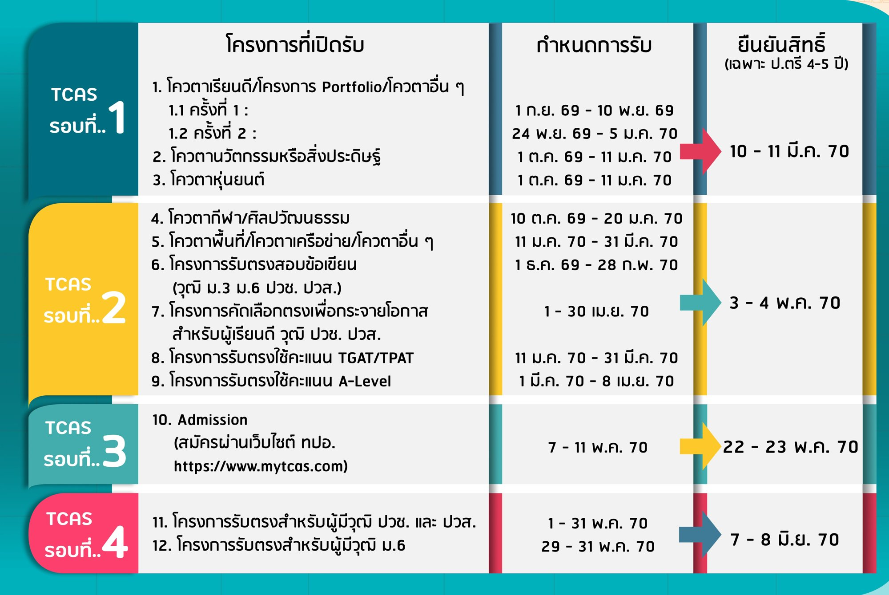

ประจำปีการศึกษา 2569
เกณฑ์การรับสมัครนักศึกษาใหม่

คุณสมบัติผู้สมัคร
ประจำปีการศึกษา 2569
สำเร็จการศึกษาระดับ ม.6 หรือเทียบเท่า
สายวิทย์-คณิต หรือสายที่เกี่ยวข้องกับสาขาที่สมัคร
GPAX ไม่ต่ำกว่า 2.50
คำนวณจากผลการเรียนเฉลี่ยสะสม 5-6 ภาคเรียน
คะแนนสอบ TGAT / TPAT ตามที่สาขากำหนด
ตรวจสอบรายละเอียดคะแนนขั้นต่ำแยกตามสาขา
สุขภาพร่างกายและจิตใจสมบูรณ์
ไม่เป็นอุปสรรคต่อการศึกษาในหลักสูตรที่สมัคร